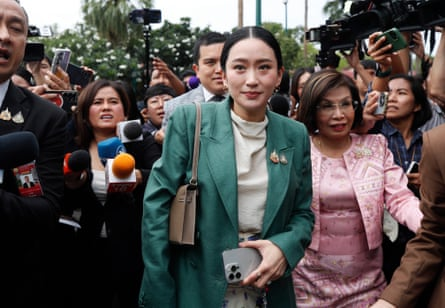
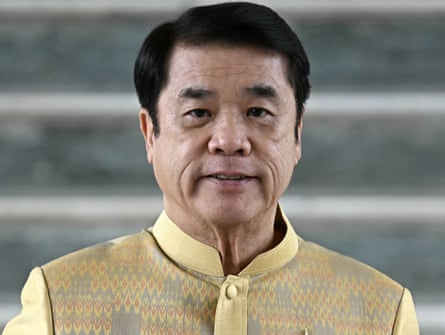
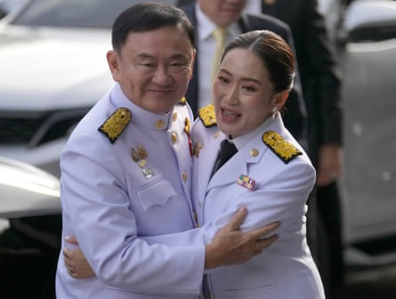

I t was a call to someone she considered an old family friend. When Thai prime minister Paetongtarn Shinawatra picked up the phone to Hun Sen, the powerful former leader of neighbouring Cambodia , she was trying, she says, to ease tensions that had erupted over a border dispute.
Instead their conversation, curiously published in full by Hun Sen himself after an initial clip was leaked, has sparked a fresh political crisis in Thailand that could signal the end of her premiership and significantly dent the position of her family, the powerful Shinawatras. It is also likely to usher in a new chapter of political uncertainty in a country prone to military coups and judicial warfare.
On Tuesday, the constitutional court suspended Paetongtarn from office pending an ethics investigation, just days after 10,000 people took to the streets demanding her resignation.
The leaked phone recording has caused outrage in Thailand , where Paetongtarn’s critics feel she is, at best, too politically naive to protect her country’s interests – and, at worst, a traitor. In the recording, Paetongtarn can be heard addressing Hun Sen as “uncle”, saying that if there were anything he wanted, she would “take care of it” and criticising a senior Thai military commander.
Paetongtarn, 38, had never served in government before she became prime minister less than a year ago. She took office only after after her predecessor Srettha Thavisin was disqualified by a court ruling.
The Shinawatras – no stranger to street protests, punitive court rulings or even military interventions – have weathered many political storms before. The family’s patriarch, former leader Thaksin Shinawatra, who was ousted in a coup in 2006, has remained one of Thailand’s most influential, and controversial politicians, even after spending more than 15 years in self-imposed exile.
Thai prime minister Paetongtarn Shinawatra (C) is surrounded by journalists after a cabinet meeting at Government House in Bangkok, Thailand, on Tuesday.Photograph: Rungroj Yongrit/EPA
But Paetongtarn, Thailand’s youngest prime minister, took office at an especially difficult moment, presiding over an unlikely coalition formed after her father struck a Faustian bargain a year earlier, through which his party joined with his old enemies to form a government. The controversial arrangement was mutually beneficial, allowing conservatives to keep a new threat – the youthful pro-reform Move Forward party – out of office. Thaksin, who had been in self-imposed exile to avoid corruption charges, returned to the country without spending as much as 24 hours in prison .
Still the uproar this week has sparked questions about whether the latest crisis could mark the final chapter for the powerful Shinawatra dynasty.
“I think the elite have become more and more confident that they might not have to rely on Thaksin any more,” says Pavin Chachavalpongpun, professor at the Center for Southeast Asian Studies at Kyoto University.
“Paetongtarn will eventually be overthrown in whichever way … they have run out of representatives from the Shinawatra dynasty,” Pavin says. Even if other relatives step forward, in his view “Thai people have had enough”.
Paetongtarn is now the fourth in her family to be prime minister, but over the years she has witnessed her family’s power wax and wane.
Thailand’s acting prime minister Suriya Jungrungreangkit arrives at Government House in Bangkok on Wednesday.Photograph: Lillian Suwanrumpha/AFP/Getty Images
As a student, Paetongtarn lived through Yellow Shirts protests that rallied against her father and eventually forced him from power. Later, in 2008, Thaksin’s brother-in-law Somchai Wongsawat was prime minister briefly, but was dismissedby a court ruling. Thaksin’s sister, Yingluck Shinawatra, who served as prime minister from 2011-2014, was also removed by a court order, followed by a coup, in 2014.
Many of the protest leaders who rallied against Paetongtarn on Saturday are veteran activists who once rallied against her relatives.
The focus of the anti-Paetongtarn protests is, however, different from those in the past. “There are legitimate reasons for staging a protest to insist on the prime minister stepping down,” said Dr Napon Jatusripitak, visiting fellow at ISEAS – Yusof Ishak Institute. “But of course, in a political context like Thailand, protests take on a life of their own.”
There is concern that if rallies escalate and become unmanageable, they could be used as a pretext for a military coup – though most analysts do not consider this to be an immediate threat. There are other steps that could be taken to permanently oust Paetongtarn or protect elite interests, including the filing of court cases. “At this stage, the conservative establishment hasn’t exhausted all its options. We haven’t yet gone through the full circle of protests, judicial interventions yet,” said Napon.
Thaksin Shinawatra, left, hugs his daughter Paetongtarn before her appointment as Thailand’s new prime minister in August 2024.Photograph: Sakchai Lalit/AP
The same day that Paetongtarn was suspended, her father Thaksin also appeared in court to face lese majesty allegations. Thaksin had likely hoped the case, which relates to comments he made to South Korean media in a 2015 interview, had gone away.
What could happen next?
Thaksin first rose to power in 2001, and developed a loyal support base among voters in the country’s poorer, rural north-east after offering policies that improved livelihoods. But he was loathed by the military royalist establishment, and a long-running power struggle between the two sides has led to a cycle of protests, military and court interventions ever since.
Even before the current crisis, Pheu Thai, the party founded by Thaksin, was already struggling to deliver on its election promises, while its decision to make a deal with its old enemies threatened its credibility.
In the short term, deputy prime minister, Suriya Juangroongruangkit, has taken over as caretaker while the constitutional court considers the case against Paetongtarn.
Wanwichit Boonprong, political scientist at Rangsit University, said the Pheu Thai-led government will seek to do “everything to prevent the dissolution of parliament because the government party is not ready to run in the election”.
Even if Paetongtarn survives the constitutional court investigation, other bodies including the anti corruption agency, may launch their own inquiries. Protest groups may also continue their rallies. Paetongtarn is, said Wanwichit, considered “politically bankrupt”. It is unclear what happens next – and whether Thaksin will be able to strike a deal. And the family’s old-friend-turned foe, Hun Sen, may also continue to cause trouble from across the border. He has previously threatened to “expose” comments made to him by Thaksin, which he claims include insults to Thailand’s powerful monarchy. The details of such remarks, if indeed they do exist, is yet to be seen. “If you act arrogantly, I will expose everything you told me,” he said.